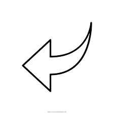

Na temporada 4 a história continua em Hawkings, mas se passa em 1986, e um grande perigo está por,
uma ameaça, dessa grande, a ameaça de Vecna.
Vecna é o novo vilão, ele vai ser o responsável pelas mortes, ele está no mundo invertido e atravésde portais
abertos para o mundo real ele da onde está consegue entrar na mente das pessoas através de umas
ramificações, onde ele se conecta e entra na mente das pessoas, principalmente os jovens.
Ele causa as mortes da seguinte maneira: captura a pessoa, deixa o corpo dela imóvel, e
só pela mente ela consegue saber o que está se passando e através dos pensamentos da pessoa, ele
estende sua mão sobre sua cara, onde no mundo real ela começa a flutuar e então quando ele coloca sua
mão na cara do individuo, no mundo real ela começa a quebrar todos os membros do corpo, assim
gerando a sua morte.
Ela foi a primeira vítima de Vecna, a pobre jovem estava conversando com seu amigo Eddie quando, entra em transe e então acompanhando o que está acontecendo ele vê que sua amiga começa a flutuar e quando menos espera ela começa a quebrar os ossos no ar e ele sem entender nada entra em desespero.
Max é uma das personagens que está presente desde a temporada 2, e na quarta, ela é afetada pela maldição de Vecna, e então no último dia da maldição ele acaba entrando na mente dela, e o corpo dela entra em transe, logo ela está junto com seus amigos e e eles acabam descobrindo que a música é o único meio de ajudar a amiga, já que esta, possibilita atingir locais do cérebro mais do que as palavras
